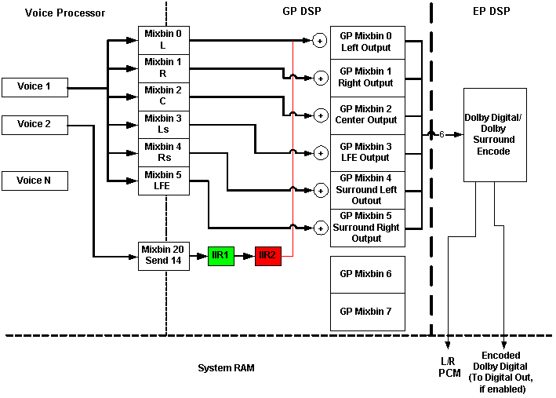

DSP effects processing are provided by the global processor digital signal processor (DSP) within the Xbox Media Communications Processor (MCP). The global processor is a fully programmable DSP, compatible with the Motorola 56300 DSP core, with some enhancements designed to make it interact with the rest of the MCP.
The global processor is responsible for taking data from the voice processor and creating the final 5.1 data stream to be sent to the encode processor for Surround encoding. The global procssor DSP program is arbitrary, but for sound to be output, it needs to (at a minimum) take data from the voice processor mixbins and output to system memory where the encode processor can pick it up for encoding. Full details on global processor DSP programming is outside the scope of this document. The figure below shows the relationship between the voice processor, global processor, and encode processor, and shows a simple global processor DSP program.

The global processor DSP program image is created by the XGPImage tool. It takes a description of the DSP program desired and creates the final binary image to be downloaded to the global processor's internal program memory. XGPImage allows a developer to specify a list of DSP effects (or any arbitrary code). It also specifies from which mixbin(s) each effects chain should receive data and where the data should be ultimately sent. The following configuration file describes a single effects chain, MIXBIN0_CHAIN with two effects (two separate instances of an IIR Filter effect) receiving data from voice processor Mixbin 20 and outputting to global processor Mixbin 1.
The following text is an example of a DSP configuration file.
[MAIN] IMAGE_FRIENDLY_NAME=MyEffectsImage FX_NUMTEMPBINS=1 GRAPH0=CHAIN [CHAIN] FX0=IIR2 FX1=IIR2 [CHAIN_FX0_IIR2] FX_MIXOUTPUT=0 FX_DSPCODE=C:\Program Files\Microsoft Xbox SDK\source\dsound\dsp\bin\iir2.scr FX_DSPSTATE=C:\Program Files\Microsoft Xbox SDK\source\dsound\dsp\ini\iir2state.ini FX_NUMINPUTS=1 FX_NUMOUTPUTS=1 FX_INPUT0=VPMIXBIN_FXSEND1 FX_OUTPUT0=GPTEMPBIN0 [CHAIN_FX1_IIR2] FX_MIXOUTPUT=0 FX_DSPCODE=C:\Program Files\Microsoft Xbox SDK\source\dsound\dsp\bin\iir2.bin FX_DSPSTATE=C:\Program Files\Microsoft Xbox SDK\source\dsound\dsp\ini\iir2state.ini FX_NUMINPUTS=1 FX_NUMOUTPUTS=1 FX_INPUT0=GPTEMPBIN0 FX_OUTPUT0=GPMIXBIN_FRONTLEFT
When run with the above configuration file, XGPImage.exe will output two files: a binary image that is to be loaded into DSP program memory and a 'C' header file describing the offsets for the parameter of each effect.
The DSP image itself is set, by DirectSound, using the IDirectSound::DownloadEffectsImage method.
DirectSound has no direct notion of what is running in the global processor directly. All DirectSound can do is:
It does the former with IDirectSound::DownloadEffectsImage. It sets DSP program parameters with IDirectSound8::SetEffectData.